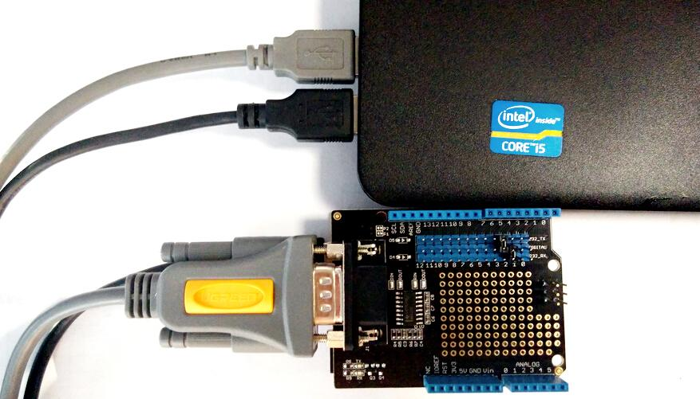
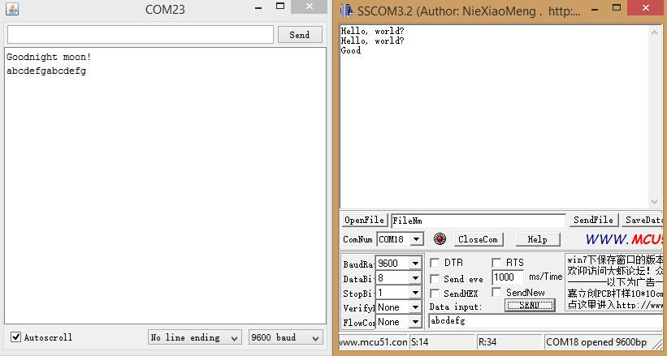

RS232 Shield is a standard communication port for industry equipment.This module is base on MAX232,which is a dual driver/receiver that includes a capacitive voltage generator to supply TIA/EIA-232-F voltage levels from a single 5-V supply. The shield integrates DB9 connectors (female) that provide connection to various devices with RS232 interface. Also the RS232 headers will facilitate your connections and commissioning. It provides the welding areas to make full use of extra space on it, which is highly convenient for prototyping.
First,we can test it by computer.

#include <SoftwareSerial.h> SoftwareSerial mySerial(7, 6); //232_TX,232_RX void setup() { // Open serial communications and wait for port to open: Serial.begin(9600); while (!Serial) { ; // wait for serial port to connect. Needed for Leonardo only } Serial.println("Goodnight moon!"); // set the data rate for the SoftwareSerial port mySerial.begin(9600); mySerial.println("Hello, world?"); } void loop() // run over and over { if (mySerial.available()) Serial.write(mySerial.read()); if (Serial.available()) mySerial.write(Serial.read()); }
You can see :
